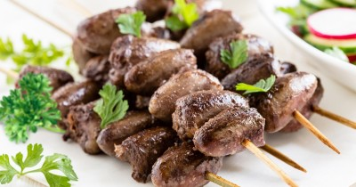

Маринованные сердечки

Ингредиенты
- Куриные сердечки - 500 гр
- Имбирь (кусочек корня) - 10 гр
- Чеснок - 10 гр
- Перец чили - 20 гр
- Апельсины - 120 гр
- Соевый соус - 40 мл
- Оливковое масло - 20 мл
Рецепт приготовления
- Начнем мы с тщательного промывания сердечек. На каждое необходимо немного нажать, чтобы удалить изнутри сгустки крови. Обрезаем с сердечек все лишнее: пленочки, крупные сосуды. Слегка убираем с сердечек влагу при помощи бумажного полотенца и перекладываем подготовленные субпродукты в подходящую для маринования емкость. на должна быть стеклянной или керамической.
- После того как сердечки будут подготовлены, можно заняться маринадом. Для этого первым делом чистим чеснок от шелухи - пару зубчиков. Моем кусочек имбирного корня,аккуратно очищаем его. Зубчики чеснока и корешок имбиря трем на мелкой терке, перекладываем в небольшую мисочку.
- Моем перец чили, удаляем плодоножку, вычищаем семена. Затем перчик разрезаем вдоль пополам, а потом каждую половинку нарезаем тонкими полукольцами. Впрочем, любители поострее могут оставить семена внутри перца и пустить их также в маринад. Надо быть готовым к тому, что будет очень остро! Нарезанный перец чили добавляем к чесноку и имбирю.
- Хорошо моем апельсин, после чего разрезаем его пополам и выдавливаем сок из каждой половинки. Сок вливаем в чесночно-имбирно-перцовую смесь. Мешаем. Осталось добавить соевый соус и оливковое масло и все еще раз хорошенько перемешать. Полученным маринадом заливаем куриные сердечки, снова перемешиваем.
- Затягиваем емкость пищевой пленкой и оставляем сердечки мариноваться в течение 1-1,5 часа в прохладном месте. Когда пройдет время, замаринованные сердечки останется нанизать на шпажки и обжарить на сухой сковороде (при желании можно добавить немного масла). Обжариваются замаринованные сердечки в течение 20 минут, в процессе их нужно переворачивать, чтобы они обжарились со всех сторон.
- Подают такую закуску горячей! Дополнить обжаренные маринованные сердечки можно свежей зеленью или любым гарниром на свой вкус.
- Приятного аппетита!
Вернуться к списку блюд